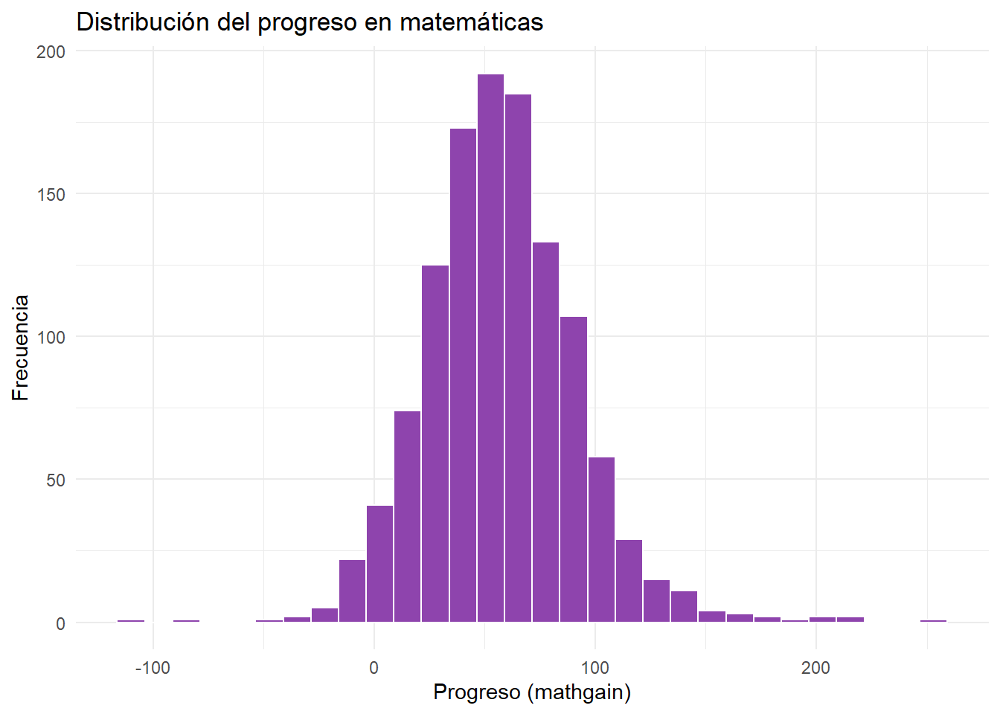
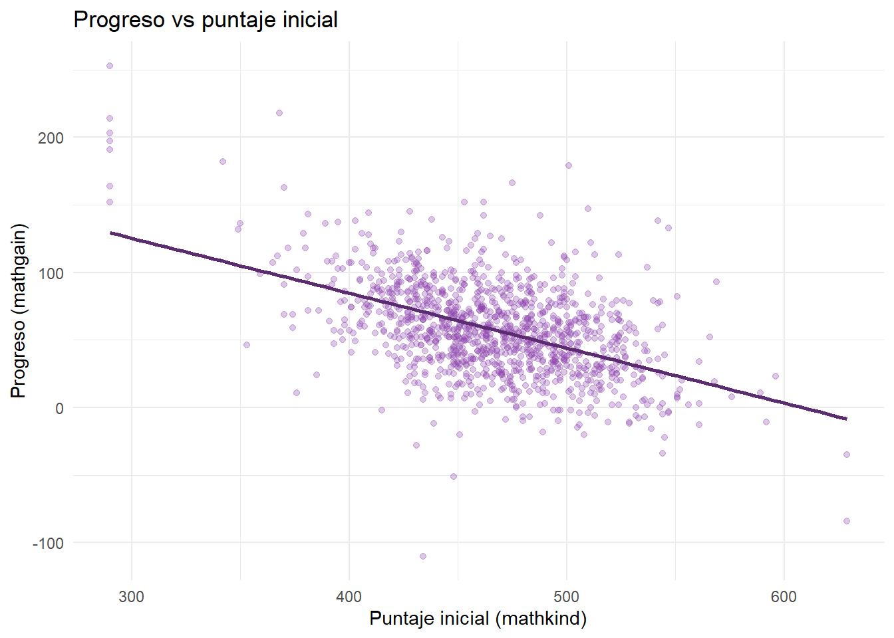
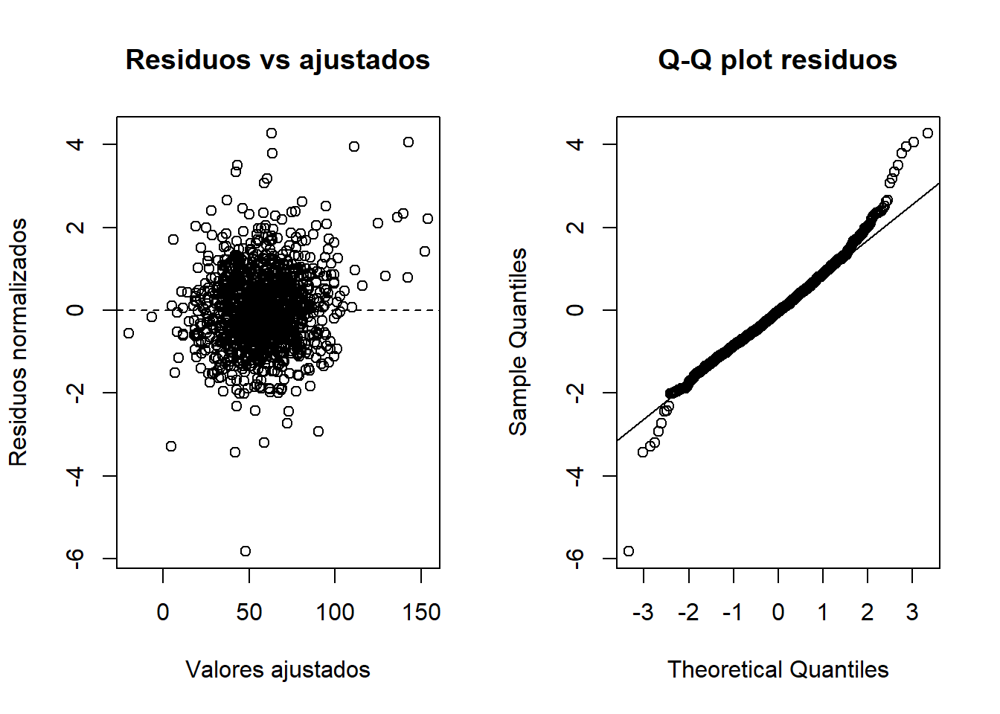
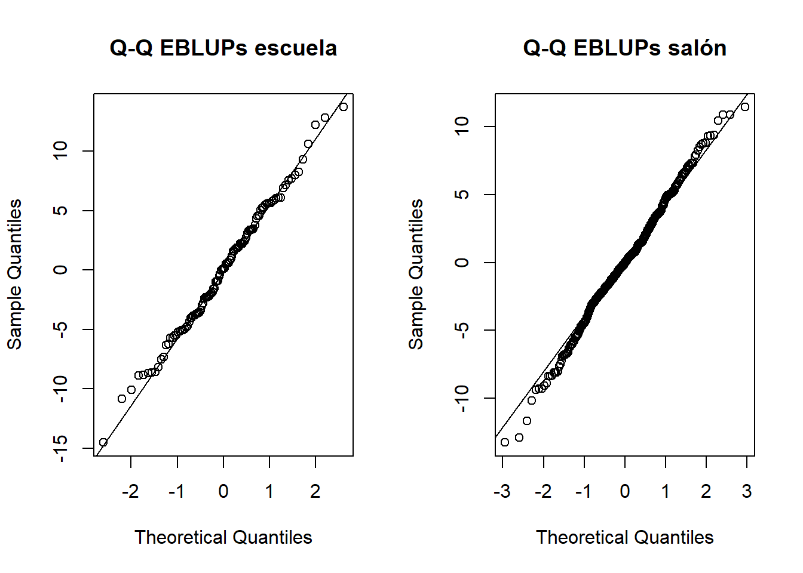

flowchart TD
A[105 Escuelas] --> B[285 Salones]
B --> C[1190 Estudiantes\ncon variables de nivel 1]
C --> D[1081 Estudiantes\nen modelos con variables\nde profesor]
Modelos para datos en clusters de 3 niveles (Three-level multilevel model)
The Classroom Example📚🎒 - West et al., Cap. 4 (p. 135)
1 📚Problema de investigación
Este ejemplo analiza el progreso en matemáticas de estudiantes de primer grado. Los estudiantes están agrupados dentro de salones y los salones dentro de escuelas — estructura de tres niveles.
Pregunta central: ¿Qué factores a nivel de estudiante, salón y escuela se asocian con el progreso en matemáticas, considerando la estructura jerárquica de tres niveles?
Note🖊
El Classroom Example del capítulo 4 de West presenta un problema conceptualmente similar al Rat Pup Example, pero con una estructura jerárquica más compleja.
En el ejemplo Rat Pup, las observaciones estaban organizadas en dos niveles: crías dentro de camadas. En el Classroom Example, la estructura tiene tres niveles: estudiantes dentro de salones y salones dentro de escuelas.
| Rat Pup | Classroom Example |
|---|---|
| Crías | Estudiantes |
| Camadas | Salones |
| — | Escuelas |
| Peso de la cría | Progreso en matemáticas |
La variable de interés es el progreso en matemáticas de estudiantes de primer grado. Este outcome se mide a nivel del estudiante, pero los estudiantes no son observaciones completamente independientes, porque están agrupados dentro de salones. A su vez, los salones están agrupados dentro de escuelas.
| Nivel | Unidad de análisis | Qué representa |
|---|---|---|
| Nivel 1 | Estudiante | Características individuales y outcome |
| Nivel 2 | Salón | Contexto de aula, profesor o grupo de clase |
| Nivel 3 | Escuela | Contexto institucional o escolar |
La estructura jerárquica importa porque estudiantes del mismo salón pueden parecerse entre sí. Comparten profesor, ambiente de aula, compañeros y prácticas pedagógicas. Además, salones de una misma escuela pueden compartir recursos, dirección, organización escolar y contexto institucional.
Por eso, si se ignorara esta estructura, el análisis trataría a todos los estudiantes como si fueran independientes, lo cual no sería adecuado. Un modelo multinivel de tres niveles permite reconocer simultáneamente la dependencia entre estudiantes del mismo salón y entre salones de la misma escuela.
En términos del modelo, esto implica considerar efectos aleatorios asociados a la estructura de agrupación: salones anidados dentro de escuelas. Así, el modelo puede separar la variabilidad atribuible a diferencias entre estudiantes, diferencias entre salones y diferencias entre escuelas.
En síntesis, este ejemplo extiende la lógica del Rat Pup Example: en lugar de un modelo de dos niveles, se trabaja con un modelo de tres niveles para representar adecuadamente la organización educativa de los datos.
2 📚Diseño del estudio
Los datos provienen del estudio Instructional Improvement, que evalúa el progreso académico de estudiantes de primer grado en matemáticas.
- Nivel 3 — Escuela: caracterizadas por su nivel de pobreza del vecindario (
housepov) - Nivel 2 — Salón: caracterizados por las cualidades del profesor (
yearstea,mathprep,mathknow) - Nivel 1 — Estudiante: con características individuales (
mathkind,sex,minority,ses) y el outcomemathgain
Igual que en rat pup el tratamiento se asignaba a nivel de camada (no de cría), aquí las variables de nivel 2 y 3 son compartidas por todos los estudiantes de un mismo salón o escuela — no varían dentro del grupo.
Note🖊
Este diagrama y la lista de niveles muestran la estructura de 3 niveles anidados de classroom — el ejemplo más “profundo” en jerarquía de los 9 que viste (rat pup tiene 2, classroom tiene 3).
Leyendo el diagrama
105 Escuelas → 285 Salones → 1190 Estudiantes (n completo)
→ 1081 Estudiantes (con mathknow)El segundo “salto” (1190 → 1081) no es un nivel adicional de la jerarquía — es la reducción de muestra que ocurre al incluir mathknow (variable de profesor con datos faltantes), relevante para Model 4.3 y H4.3-H4.5.
Las 3 variables de nivel 3 (escuela) — solo una se usa
De las variables de escuela, solo housepov aparece en el diseño — es la que se evalúa en H4.6 (Model 4.4).
Las 3 variables de nivel 2 (salón/profesor)
yearstea, mathprep, mathknow — las 3 se evalúan juntas en H4.3-H4.5 (Model 4.3), y ninguna resultó significativa.
Las 4 variables de nivel 1 (estudiante) + outcome
mathkind, sex, minority, ses — se evalúan juntas en H4.2 (Model 4.2), y sí aportan significativamente. mathgain es el outcome: cuánto mejora el estudiante en matemáticas.
La analogía con rat pup — variables “compartidas dentro del grupo”
Esta es la misma idea que vimos en rat pup: así como el treatment se asigna a la camada completa (todas las crías de una camada reciben el mismo tratamiento), aquí housepov es el mismo valor para todos los estudiantes de una escuela, y yearstea/mathprep/mathknow son el mismo valor para todos los estudiantes de un salón. Solo las variables de nivel 1 (mathkind, sex, minority, ses) varían estudiante por estudiante.
Por qué esto importa para la estrategia step-up
Esta estructura de “variables compartidas por nivel” es justo lo que la estrategia step-up va agregando, un nivel a la vez: primero el outcome y las variables del estudiante (Model 4.2), luego las del salón (Model 4.3), luego las de la escuela (Model 4.4) — siguiendo el mismo orden en que están organizadas en este diagrama, de abajo (nivel 1) hacia arriba (nivel 3).
3 📚Objetivos e hipótesis
Objetivo general: Evaluar qué factores a nivel de estudiante, salón y escuela se asocian con el progreso en matemáticas, reconociendo la estructura jerárquica de tres niveles.
Objetivos analíticos:
- Determinar si existe variabilidad relevante entre salones (más allá de la variabilidad entre escuelas)
- Evaluar si las características del estudiante (nivel 1) explican el progreso en matemáticas
- Evaluar si las características del salón/profesor (nivel 2) aportan información adicional
- Evaluar si el contexto de la escuela (nivel 3) aporta información adicional
- Seleccionar el modelo que mejor represente los datos, siguiendo una estrategia step-up
Note🖊
Esta sección define qué se va a hacer en el análisis — es el puente entre el problema de investigación y los modelos que vienen después.
Objetivo general: dice qué se quiere responder en términos amplios — qué factores (de estudiante, salón, escuela) se asocian con el progreso, reconociendo que hay 3 niveles de agrupación.
Objetivos analíticos — cada uno se traduce directamente en una hipótesis (H4.1 a H4.6) que verás más adelante:
“¿Existe variabilidad relevante entre salones?” → Esto es H4.1: ¿necesito el efecto aleatorio de salón anidado en escuela? Si los salones no difieren entre sí, no necesitaría ese nivel extra de complejidad.
“¿Las características del estudiante explican el progreso?” → Esto es H4.2: ¿agregar
mathkind,sex,minority,sesmejora el modelo respecto al incondicional?“¿Las características del salón/profesor aportan algo más?” → Esto es H4.3-H4.5: una vez que ya tengo las variables del estudiante, ¿el profesor (
yearstea,mathprep,mathknow) agrega información adicional?“¿El contexto de la escuela aporta algo más?” → Esto es H4.6: ¿
housepovagrega algo, más allá de estudiante y profesor?“Seleccionar el modelo que mejor represente los datos” → Es el resultado final de todo el proceso — en este caso, Model 4.2.
Es básicamente el “índice” del análisis: cada objetivo analítico corresponde a una pregunta que se responde con una hipótesis específica más adelante.
4 📚Estructura jerárquica
| Nivel | Resultado |
|---|---|
| Estudiantes (Nivel 1) | 1190 |
| Salones (Nivel 2) | 312 |
| Escuelas (Nivel 3) | 107 |
| Salones por escuela | 1–9 (media 2.9) |
| Estudiantes por salón | 1–10 (media 3.8) |
| classid repetido entre escuelas | No (IDs únicos por escuela) |
Estructura de 3 niveles: estudiantes dentro de salones, salones dentro de escuelas — diseño desbalanceado en ambos niveles de anidamiento.
Note🖊
La tabla muestra:
| Nivel | Qué es |
|---|---|
| Estudiantes (Nivel 1) | Unidad de medición — cada fila es un estudiante |
| Salones (Nivel 2) | Estudiantes agrupados por salón |
| Escuelas (Nivel 3) | Salones agrupados por escuela |
| Salones por escuela | ¿Cuántos salones tiene cada escuela? |
| Estudiantes por salón | ¿Cuántos estudiantes tiene cada salón? |
| classid repetido entre escuelas | ¿Los códigos de salón se repiten en distintas escuelas? |
Comparación con rat pup
| Rat Pup | Classroom | |
|---|---|---|
| Niveles | 2 | 3 |
| Nivel 1 | Crías | Estudiantes |
| Nivel 2 | Camadas | Salones |
| Nivel 3 | — | Escuelas |
| Desbalance | Sí (crías/camada: 2-18) | Sí, en ambos niveles de anidamiento |
¿Por qué esto importa para el modelo?
Esta estructura justifica que el modelo necesite dos efectos aleatorios anidados:
random = ~ 1 | schoolid/classidLo que significa: intercepto aleatorio para salón, anidado dentro de intercepto aleatorio para escuela. Igual que en rat pup necesitabas random = ~1 | litter para reconocer que las crías de una camada se parecen, aquí necesitas reconocer dos capas de “parecido”:
- Estudiantes del mismo salón se parecen entre sí
- Salones de la misma escuela también se parecen entre sí (independientemente del salón específico)
Sobre la unicidad de classid
Si classid se repitiera entre escuelas, la especificación schoolid/classid seguiría representando correctamente la anidación, porque identifica salones dentro de cada escuela. Sin embargo, para tablas descriptivas o gráficos puede ser útil crear un identificador combinado de escuela-salón.
5 📚Variables
| Variable | Nivel | Tipo | Rol |
|---|---|---|---|
mathgain |
1 | Continua | Outcome |
mathkind |
1 | Continua | Covariable — puntaje inicial |
sex |
1 | Categórica | Covariable |
minority |
1 | Categórica | Covariable |
ses |
1 | Continua | Covariable |
childid |
1 | Identificador | Estudiante |
yearstea |
2 | Continua | Covariable — años enseñando |
mathprep |
2 | Continua | Covariable — preparación matemática |
mathknow |
2 | Continua | Covariable — conocimiento matemático |
classid |
2 | Identificador | Salón |
housepov |
3 | Continua | Covariable — pobreza escuela |
schoolid |
3 | Identificador | Escuela |
Note🖊
Esta tabla organiza las 12 variables del Classroom Example según a qué nivel jerárquico pertenecen — es la pieza clave para entender qué predictores pueden incluirse y cómo se interpretan.
Nivel 1 — Estudiante
Características que varían de estudiante a estudiante, incluso dentro del mismo salón: mathgain (outcome), mathkind (puntaje inicial), sex, minority, ses, childid.
Nivel 2 — Salón/Profesor
En este nivel hay tres covariables sustantivas del profesor o salón: yearstea, mathprep y mathknow. Además, classid funciona como identificador del salón.
Nivel 3 — Escuela
En este nivel se incluye housepov como covariable de contexto escolar y schoolid como identificador de la escuela.
¿Por qué esta clasificación por nivel es tan importante?
Conecta directamente con la estrategia “step-up”:
Model 4.1 (vacío)
→ Model 4.2: + variables nivel 1 (mathkind, sex, minority, ses)
→ Model 4.3: + variables nivel 2 (yearstea, mathprep, mathknow)
→ Model 4.4: + variable nivel 3 (housepov)La estrategia agrega variables nivel por nivel — primero ves si las características del estudiante explican el progreso, luego si el profesor agrega algo más, y finalmente si el contexto de la escuela agrega algo más.
Comparación con rat pup
| Rat Pup | Classroom | |
|---|---|---|
| Outcome | weight (nivel 1) |
mathgain (nivel 1) |
| Variable nivel 1 | sex1 |
mathkind, sex, minority, ses |
| Variable nivel 2 | treatment, litsize |
yearstea, mathprep, mathknow |
| Variable nivel 3 | — (no aplica) | housepov |
En rat pup solo tenías 2 niveles, así que el “tratamiento” (variable de interés) era de nivel 2. Aquí, con 3 niveles, las variables de interés se distribuyen en los tres niveles — lo que hace el análisis conceptualmente más rico pero también más complejo.
6 📚Exploración descriptiva

Note🖊
Este histograma muestra la distribución del outcome principal (mathgain).
Lo que se observa
1. Forma aproximadamente normal (campana) La distribución tiene forma de campana, centrada alrededor de 50-60 puntos — la mayoría de los estudiantes progresaron entre 30 y 100 puntos.
2. Valores negativos Hay una cola hacia la izquierda que llega hasta -100. Esto significa que algunos estudiantes empeoraron — su puntaje de matemáticas fue más bajo al final del año que al inicio (mathkind).
3. Cola larga hacia la derecha Hay valores dispersos hasta 200-250, pero muy poca frecuencia ahí.
¿Por qué esto importa?
La forma aproximadamente simétrica del outcome es compatible con el uso de un modelo lineal, pero la evaluación principal del supuesto de normalidad debe hacerse más adelante con los residuos del modelo — no con la distribución marginal del outcome.
Comparación con rat pup
En rat pup, el outcome (weight) tenía un rango mucho más acotado y sin valores negativos — tiene sentido porque el peso físico no puede ser negativo. Aquí, mathgain sí puede ser negativo porque es una diferencia (puntaje final - puntaje inicial), no una medida absoluta.
`geom_smooth()` using formula = 'y ~ x'
Note🖊
Este gráfico muestra la relación entre el outcome y el predictor más fuerte del modelo.
Lo que se observa
A medida que mathkind aumenta (300 → 600), el mathgain esperado disminuye (de ~130 a casi 0, incluso negativo en el extremo).
Los estudiantes que empezaron con puntajes más bajos tienden a progresar más, mientras que los que empezaron con puntajes altos progresan menos.
Este patrón es compatible con fenómenos frecuentes en datos educativos, como la regresión a la media y un posible efecto techo: quienes comienzan con puntajes muy altos tienen menos margen para aumentar su puntaje, mientras que quienes comienzan más bajo pueden mostrar mayores ganancias.
¿Por qué esto es la justificación clave para mathkind en el modelo?
Es la evidencia visual de por qué mathkind debe incluirse como covariable en Model 4.2. Si no controlas por mathkind, estarías ignorando la fuente de variación más grande en el outcome — análogo a litsize en rat pup.
Conexión con H4.2: dado lo fuerte que es esta relación, es esperable que mathkind aporte información importante al modelo. H4.2 evaluará formalmente si el conjunto de variables de nivel estudiante mejora el ajuste respecto al modelo incondicional.
7 📚Estrategia step-up
A diferencia del capítulo 3 que usaba top-down, aquí West usa una estrategia step-up: parte del modelo más simple y va agregando complejidad.
flowchart TD
A[Model 4.1\nModelo incondicional\nn=1190] --> B{H4.1\n¿Variación entre salones?}
B --> C[Model 4.2\nCovariables nivel 1\nn=1190]
C --> D{H4.2\n¿Aportan variables del estudiante?}
D --> E[Model 4.3\nCovariables nivel 2\nn=1081]
E --> F{H4.3-H4.5\n¿Aporta el salón/profesor?}
F --> G[Model 4.4\nCovariable nivel 3\nn=1190]
G --> H{H4.6\n¿Aporta housepov?}
H --> I[Modelo final: Model 4.2]
A diferencia de top-down (rat pup), aquí cada paso agrega un componente nuevo. Model 4.3 usa una muestra más pequeña (n=1081 vs n=1190) por datos faltantes en
mathknow. Los componentes que no aportan evidencia suficiente (Model 4.3, Model 4.4) no se incluyen en el modelo final.
Note🖊
La estrategia step-up es lo opuesto a la top-down de rat pup: en vez de empezar “cargado” y simplificar, aquí se empieza vacío y se va agregando complejidad, nivel por nivel.
El camino del diagrama, paso a paso:
Model 4.1 — modelo incondicional Solo intercepto + efectos aleatorios de escuela y salón. Sin predictores. Sirve para ver cómo se distribuye la varianza “de base” (esto es lo que usamos para el ICC).
H4.1 — ¿hay variabilidad entre salones? Compara Model 4.1 (con efecto de salón) vs Model 4.1A (sin efecto de salón), usando LRT con REML. Si es significativo, se necesitan los dos efectos aleatorios (escuela y salón).
Model 4.2 — covariables nivel 1 Se agregan las 4 variables del estudiante.
H4.2 — ¿aportan las variables del estudiante? Compara Model 4.1 vs Model 4.2 con LRT y ML (porque cambian los efectos fijos). Si es significativo, se mantienen esas 4 variables.
Model 4.3 — covariables nivel 2 Se agregan las 3 variables del salón/profesor. Pero esta vez la muestra se reduce (n=1081 vs 1190) por datos faltantes en mathknow.
H4.3-H4.5 — ¿aportan las variables del salón? Como la muestra cambió, no se puede usar LRT — se revisan las pruebas t individuales de cada variable nueva dentro de Model 4.3.
Model 4.4 — covariable nivel 3 Se agrega housepov, con la misma muestra que Model 4.2 (n=1190).
H4.6 — ¿aporta housepov? Aunque aquí sí sería posible un LRT (misma muestra), West usa de todas formas la prueba t individual — por simplicidad, ya que es un solo parámetro nuevo.
Modelo final: Model 4.2 Como ni las variables de salón (H4.3-H4.5) ni housepov (H4.6) resultaron significativas, el modelo “retrocede” a Model 4.2 — el más simple que sí mostró mejora significativa (H4.2).
Comparación con rat pup (top-down):
| Rat Pup (top-down) | Classroom (step-up) | |
|---|---|---|
| Punto de partida | Modelo cargado | Modelo vacío |
| Dirección | Quitar componentes | Agregar componentes |
| Modelo final | Resultado de simplificar | Resultado de no seguir agregando |
En ambos casos, el modelo final es el que demuestra ser necesario — la diferencia es solo el punto de partida y la dirección de las pruebas.
8 📚Model 4.1: Modelo incondicional
Mostrar código
model4.1.fit <- lme(
mathgain ~ 1,
random = ~ 1 | schoolid/classid,
data = classroom_l1,
method = "REML")
summary(model4.1.fit)Linear mixed-effects model fit by REML
Data: classroom_l1
AIC BIC logLik
11776.76 11797.09 -5884.382
Random effects:
Formula: ~1 | schoolid
(Intercept)
StdDev: 8.802955
Formula: ~1 | classid %in% schoolid
(Intercept) Residual
StdDev: 9.961301 32.06609
Fixed effects: mathgain ~ 1
Value Std.Error DF t-value p-value
(Intercept) 57.42703 1.443288 878 39.78903 0
Standardized Within-Group Residuals:
Min Q1 Med Q3 Max
-4.64405126 -0.59835943 -0.03364297 0.53341988 5.63351835
Number of Observations: 1190
Number of Groups:
schoolid classid %in% schoolid
107 312 Este modelo no tiene predictores — solo estima cómo se distribuye la varianza total entre escuela, salón y residuo. Es el punto de partida de la estrategia step-up.
Note🖊
Model 4.1 es el “modelo vacío” — solo tiene un intercepto (mathgain ~ 1) y los dos efectos aleatorios anidados (~1 | schoolid/classid). No hay predictores.
¿Para qué sirve un modelo sin predictores?
Te dice cómo se reparte la variabilidad total de mathgain en tres componentes, antes de intentar explicar nada:
- Varianza entre escuelas — cuánto varía el promedio de
mathgainde una escuela a otra - Varianza entre salones (dentro de cada escuela) — cuánto varía el promedio de un salón a otro, dentro de la misma escuela
- Varianza residual — cuánto varían los estudiantes entre sí, dentro del mismo salón
¿Por qué es el punto de partida de step-up?
Es la “línea base” — el modelo más simple posible que aún reconoce la estructura de 3 niveles. Todo lo que se agregue después (Model 4.2, 4.3, 4.4) se compara contra este punto de partida, o contra versiones intermedias de él.
Conexión con ICC
Las tres varianzas de este modelo son justo las que se usan más adelante para calcular el ICC — por eso este modelo se vuelve a mencionar en la sección “Componentes de varianza e ICC”, aunque el modelo final sea Model 4.2.
9 📚H4.1: ¿Hay variabilidad entre salones?
Mostrar código
model4.1A.fit <- lme(
mathgain ~ 1,
random = ~ 1 | schoolid,
data = classroom_l1,
method = "REML")
anova(model4.1A.fit, model4.1.fit) Model df AIC BIC logLik Test L.Ratio p-value
model4.1A.fit 1 3 11782.67 11797.91 -5888.335
model4.1.fit 2 4 11776.76 11797.09 -5884.382 1 vs 2 7.904762 0.0049Si el LRT es significativo, se conserva el intercepto aleatorio de salón dentro de escuela. Esta comparación usa REML porque ambos modelos tienen los mismos efectos fijos (solo el intercepto) y la misma muestra (n=1190).
Como esta comparación evalúa un componente de varianza, la interpretación del LRT debe hacerse recordando que la varianza está en el límite del espacio de parámetros. Para fines de este ejemplo, el resultado apoya mantener el intercepto aleatorio de salón dentro de escuela.
Note🖊
H4.1 es la primera decisión de la estrategia step-up — y es análoga a H3.1 en rat pup (¿necesito el intercepto aleatorio de camada?), pero aquí con un nivel extra.
¿Qué se compara?
model4.1A.fit— solo efecto aleatorio de escuela (~1 | schoolid) — asume que los salones dentro de una misma escuela NO difieren entre símodel4.1.fit— efectos aleatorios de escuela Y salón (~1 | schoolid/classid) — permite que cada salón tenga su propio nivel, además de cada escuela
¿Por qué esto es importante?
Si model4.1A.fit fuera suficiente (salones no difieren), podrías simplificar a un modelo de 2 niveles (estudiantes dentro de escuelas, ignorando el salón). Pero si el LRT es significativo, necesitas los 3 niveles completos.
La nota sobre el límite del espacio de parámetros
Igual que en H3.1 de rat pup, aquí también se está probando si una varianza es igual a cero (la varianza del salón). Como una varianza no puede ser negativa, técnicamente el p-value del LRT debería ajustarse (dividir entre 2, por la mezcla 50/50 entre masa puntual y chi-cuadrado). En la práctica, si el resultado ya es muy significativo, este ajuste no cambia la conclusión.
Resultado esperado
Si el LRT es significativo (como reporta West, p<0.01), se mantiene la estructura de 3 niveles — los salones sí aportan variabilidad propia, más allá de la escuela a la que pertenecen.
10 📚Model 4.2: Covariables del estudiante (Nivel 1)
Mostrar código
model4.2.fit <- lme(
mathgain ~ mathkind + sex + minority + ses,
random = ~ 1 | schoolid/classid,
data = classroom_l1,
method = "REML")
summary(model4.2.fit)Linear mixed-effects model fit by REML
Data: classroom_l1
AIC BIC logLik
11401.8 11442.42 -5692.902
Random effects:
Formula: ~1 | schoolid
(Intercept)
StdDev: 8.671991
Formula: ~1 | classid %in% schoolid
(Intercept) Residual
StdDev: 9.12604 27.10286
Fixed effects: mathgain ~ mathkind + sex + minority + ses
Value Std.Error DF t-value p-value
(Intercept) 282.79034 10.853234 874 26.055860 0.0000
mathkind -0.46980 0.022266 874 -21.099524 0.0000
sex -1.25119 1.657730 874 -0.754762 0.4506
minority -8.26213 2.340113 874 -3.530655 0.0004
ses 5.34638 1.241094 874 4.307794 0.0000
Correlation:
(Intr) mthknd sex minrty
mathkind -0.978
sex -0.044 -0.031
minority -0.307 0.163 -0.018
ses 0.140 -0.168 0.019 0.163
Standardized Within-Group Residuals:
Min Q1 Med Q3 Max
-5.82574352 -0.61102781 -0.03366662 0.55380954 4.26781224
Number of Observations: 1190
Number of Groups:
schoolid classid %in% schoolid
107 312 Se agregan las 4 variables de Nivel 1:
mathkind,sex,minority,ses. Model 4.2 es el modelo seleccionado como modelo final porque incorpora las covariables de nivel estudiante y mantiene la estructura aleatoria de tres niveles, sin retener predictores de nivel salón o escuela que no aportan evidencia suficiente.
Note🖊
Model 4.2 agrega las 4 variables de Nivel 1 a la estructura de Model 4.1:
mathgain ~ mathkind + sex + minority + ses
random = ~1 | schoolid/classid¿Por qué estas 4 variables específicamente?
Son las características del estudiante que podrían explicar diferencias en el progreso:
mathkind— puntaje inicial. Ya vimos en el gráfico descriptivo que tiene una relación negativa fuerte conmathgain(regresión a la media)sex— sexo del estudianteminority— si pertenece a un grupo minoritarioses— nivel socioeconómico de la familia
¿Qué cambia respecto a Model 4.1?
Los efectos aleatorios siguen siendo los mismos (escuela + salón anidado) — lo que cambia son los efectos fijos. La pregunta que responde este modelo es: “una vez que considero estas 4 características del estudiante, ¿cuánta variabilidad queda sin explicar, y dónde se concentra (escuela, salón, residual)?”
Por qué este termina siendo el modelo final
Spoiler: cuando se prueben Model 4.3 (+ variables de salón) y Model 4.4 (+ variable de escuela), ninguna de esas variables adicionales va a resultar significativa. Por eso Model 4.2 — el primer modelo que sí mostró una mejora clara (H4.2) — se convierte en el modelo final.
11 📚H4.2: ¿Aportan las variables del estudiante?
Mostrar código
model4.1.ml.fit <- lme(
mathgain ~ 1,
random = ~ 1 | schoolid/classid,
data = classroom_l1,
method = "ML")
model4.2.ml.fit <- lme(
mathgain ~ mathkind + sex + minority + ses,
random = ~ 1 | schoolid/classid,
data = classroom_l1,
method = "ML")
anova(model4.1.ml.fit, model4.2.ml.fit) Model df AIC BIC logLik Test L.Ratio p-value
model4.1.ml.fit 1 4 11779.33 11799.66 -5885.666
model4.2.ml.fit 2 8 11406.96 11447.62 -5695.481 1 vs 2 380.3684 <.0001Aquí se comparan modelos con distintos efectos fijos (Model 4.1 sin predictores vs Model 4.2 con 4 predictores), con la misma muestra (n=1190), por lo que se usa ML en lugar de REML.
Note🖊
H4.2 es la segunda decisión de la estrategia step-up — análoga a H4.1, pero ahora sobre efectos fijos en vez de efectos aleatorios.
¿Qué se compara?
model4.1.ml.fit— modelo incondicional (solo intercepto)model4.2.ml.fit— modelo con las 4 variables de Nivel 1
Ambos con la misma estructura aleatoria (escuela + salón) y la misma muestra (n=1190) — solo cambian los efectos fijos.
¿Por qué ML y no REML aquí?
Esta es la regla que ya viste en rat pup (H3.6): cuando dos modelos tienen distintos efectos fijos, hay que usar ML para que la comparación de verosimilitudes sea válida. REML “ajusta” la verosimilitud de una forma que depende de los efectos fijos — comparar REML entre modelos con distintos efectos fijos sería como comparar manzanas con naranjas.
Resultado esperado
West reporta p<0.01 — las 4 variables de nivel 1, en conjunto, mejoran significativamente el modelo. Esto confirma formalmente lo que ya sugería el gráfico de mathgain vs mathkind: el punto de partida del estudiante (y sus otras características) sí importa para explicar su progreso.
Siguiente paso
Con H4.2 confirmado, Model 4.2 queda como “candidato fuerte” a modelo final. Los siguientes pasos (H4.3-H4.6) van a intentar agregar más — pero si no aportan, Model 4.2 se queda como está.
12 📚Model 4.3: Covariables del salón (Nivel 2)
Mostrar código
model4.3.fit <- lme(
mathgain ~ mathkind + sex + minority + ses +
yearstea + mathprep + mathknow,
random = ~ 1 | schoolid/classid,
data = classroom_l2,
method = "REML")
summary(model4.3.fit)Linear mixed-effects model fit by REML
Data: classroom_l2
AIC BIC logLik
10335 10389.76 -5156.499
Random effects:
Formula: ~1 | schoolid
(Intercept)
StdDev: 8.671285
Formula: ~1 | classid %in% schoolid
(Intercept) Residual
StdDev: 9.310153 26.71766
Fixed effects: mathgain ~ mathkind + sex + minority + ses + yearstea + mathprep + mathknow
Value Std.Error DF t-value p-value
(Intercept) 282.02452 11.701687 792 24.101185 0.0000
mathkind -0.47501 0.022747 792 -20.882471 0.0000
sex -1.33950 1.718580 792 -0.779423 0.4360
minority -7.86886 2.418081 792 -3.254177 0.0012
ses 5.41925 1.275995 792 4.247078 0.0000
yearstea 0.03974 0.117070 177 0.339435 0.7347
mathprep 1.09485 1.148493 177 0.953296 0.3417
mathknow 1.91448 1.147015 177 1.669094 0.0969
Correlation:
(Intr) mthknd sex minrty ses yearst mthprp
mathkind -0.943
sex -0.069 -0.005
minority -0.302 0.166 -0.015
ses 0.121 -0.163 0.020 0.159
yearstea -0.092 0.005 0.015 0.040 -0.033
mathprep -0.283 0.052 -0.002 0.017 0.043 -0.168
mathknow -0.049 0.029 0.007 0.146 -0.015 0.015 0.004
Standardized Within-Group Residuals:
Min Q1 Med Q3 Max
-3.3989531 -0.6289628 -0.0413954 0.5564112 4.3029072
Number of Observations: 1081
Number of Groups:
schoolid classid %in% schoolid
105 285 Este modelo usa
classroom_l2(n=1081) — 109 observaciones menos que Model 4.2, por datos faltantes enmathknow.
Note🖊
Model 4.3 agrega las 3 variables de Nivel 2 (salón/profesor) a Model 4.2:
mathgain ~ mathkind + sex + minority + ses +
yearstea + mathprep + mathknow
random = ~1 | schoolid/classidEl cambio importante: la muestra
Este modelo usa classroom_l2 (n=1081), no classroom_l1 (n=1190) — 109 estudiantes menos. La razón es que algunos profesores no tienen información de mathknow (conocimiento de matemáticas), y na.omit() elimina esas filas.
¿Por qué esto es importante?
Porque significa que Model 4.2 y Model 4.3 ya no son directamente comparables con un LRT — están ajustados sobre muestras distintas. Si compararas sus log-verosimilitudes, parte de la diferencia podría deberse simplemente a que tienen distinto número de observaciones, no a que las variables de salón aporten o no.
¿Qué hacer entonces?
En vez de comparar Model 4.2 vs Model 4.3 con anova(), se revisan los p-values individuales de las 3 variables nuevas (yearstea, mathprep, mathknow) dentro de Model 4.3 — eso es exactamente lo que hace H4.3-H4.5.
Las variables que se agregan
yearstea— años de experiencia del profesormathprep— preparación matemática del profesormathknow— conocimiento matemático del profesor
La pregunta sustantiva es: “¿un profesor con más experiencia o más preparado logra que sus estudiantes progresen más en matemáticas?”
13 📚H4.3-H4.5: ¿Aportan las variables del salón?
A diferencia de H4.1 y H4.2, aquí West no usa LRT — porque Model 4.3 tiene una muestra distinta a Model 4.2 (1081 vs 1190), por lo que comparar verosimilitudes no sería válido. En su lugar, se evalúan las pruebas t individuales de cada nueva variable dentro de Model 4.3.
| Value | Std.Error | t-value | p-value | |
|---|---|---|---|---|
| yearstea | 0.0397 | 0.1171 | 0.3394 | 0.7347 |
| mathprep | 1.0949 | 1.1485 | 0.9533 | 0.3417 |
| mathknow | 1.9145 | 1.1470 | 1.6691 | 0.0969 |
Ninguna de las tres variables de salón (
yearstea,mathprep,mathknow) alcanza significancia al 0.05 — no se retienen en el modelo final.
Note🖊
H4.3, H4.4 y H4.5 son tres hipótesis “agrupadas” — cada una pregunta por una de las tres variables de salón dentro de Model 4.3, pero usando el mismo método: prueba t individual.
¿Por qué prueba t y no LRT?
Ya lo vimos en el callout de Model 4.3: la muestra cambió (n=1081 vs n=1190), así que un LRT entre Model 4.2 y Model 4.3 no sería válido. La prueba t, en cambio, evalúa cada coeficiente dentro de Model 4.3 — no requiere comparar con otro modelo de distinta muestra.
Leyendo la tabla de resultados
| Variable | p-value (aprox.) | ¿Significativo? |
|---|---|---|
yearstea |
~0.73 | No |
mathprep |
~0.34 | No |
mathknow |
~0.10 | No (cerca, pero no al 0.05) |
Ninguna alcanza el umbral convencional de 0.05.
¿Qué significa esto sustantivamente?
Una vez que ya controlas por las características del estudiante (Model 4.2), las características observadas del profesor no agregan información adicional para explicar el progreso en matemáticas — al menos no las que se midieron en este estudio (yearstea, mathprep, mathknow).
Importante: esto NO significa que “el profesor no importa”
Solo significa que estas 3 variables específicas no mostraron asociación significativa. El salón como unidad de agrupación sigue siendo relevante — de hecho, ya confirmaste en H4.1 que hay variabilidad entre salones. Lo que no se confirma es que estas características particulares del profesor expliquen esa variabilidad.
Decisión: no se retienen yearstea, mathprep, mathknow como efectos fijos — el modelo “no avanza” a Model 4.3, sigue en Model 4.2.
14 📚Model 4.4: Covariable de escuela (Nivel 3)
Mostrar código
model4.4.fit <- lme(
mathgain ~ mathkind + sex + minority + ses + housepov,
random = ~ 1 | schoolid/classid,
data = classroom_l3,
method = "REML")
summary(model4.4.fit)Linear mixed-effects model fit by REML
Data: classroom_l3
AIC BIC logLik
11396.06 11441.75 -5689.029
Random effects:
Formula: ~1 | schoolid
(Intercept)
StdDev: 8.818243
Formula: ~1 | classid %in% schoolid
(Intercept) Residual
StdDev: 9.030822 27.10018
Fixed effects: mathgain ~ mathkind + sex + minority + ses + housepov
Value Std.Error DF t-value p-value
(Intercept) 285.05800 11.020766 874 25.865534 0.0000
mathkind -0.47086 0.022281 874 -21.132931 0.0000
sex -1.23460 1.657434 874 -0.744884 0.4565
minority -7.75588 2.384993 874 -3.251950 0.0012
ses 5.23971 1.244971 874 4.208703 0.0000
housepov -11.43923 9.937384 105 -1.151131 0.2523
Correlation:
(Intr) mthknd sex minrty ses
mathkind -0.969
sex -0.042 -0.032
minority -0.265 0.153 -0.015
ses 0.123 -0.165 0.019 0.144
housepov -0.173 0.035 -0.009 -0.184 0.078
Standardized Within-Group Residuals:
Min Q1 Med Q3 Max
-5.79254947 -0.60523530 -0.03270737 0.55242345 4.27266338
Number of Observations: 1190
Number of Groups:
schoolid classid %in% schoolid
107 312 Este modelo usa
classroom_l3(n=1190) — la misma muestra que Model 4.2, porquehousepovno agrega datos faltantes.
Note🖊
Model 4.4 agrega housepov (la única variable de Nivel 3) a Model 4.2:
mathgain ~ mathkind + sex + minority + ses + housepov
random = ~1 | schoolid/classidLa muestra: aquí NO hay reducción
A diferencia de Model 4.3 (que perdía 109 observaciones por mathknow), housepov está disponible para todas las escuelas — Model 4.4 usa classroom_l3 con n=1190, exactamente la misma muestra que Model 4.2.
¿Por qué esto importa?
A diferencia de H4.3-H4.5 (donde la prueba t era la única opción válida por el cambio de muestra), aquí sí sería posible comparar Model 4.2 vs Model 4.4 con un LRT — ambos tienen n=1190. Aun así, West usa prueba t — lo verás en el callout de H4.6.
La variable que se agrega
housepov— nivel de pobreza del vecindario donde está la escuela
La pregunta sustantiva es: “más allá de las características del estudiante, ¿el contexto socioeconómico de la escuela (pobreza del vecindario) se asocia con el progreso en matemáticas?”
Por qué esto es conceptualmente interesante
Es una variable de nivel 3 (escuela) — la más “lejana” del estudiante individual. Si fuera significativa, sugeriría que el contexto institucional/social de la escuela tiene un efecto sobre el progreso, independientemente de quién sea el estudiante o quién sea su profesor.
15 📚H4.6: ¿Aporta housepov?
A diferencia de Model 4.3, Model 4.4 usa la misma muestra que Model 4.2 (classroom_l3, n=1190) — housepov no agrega datos faltantes. Aunque aquí sí sería posible realizar un LRT con ML, porque Model 4.4 y Model 4.2 usan la misma muestra, West evalúa housepov mediante su prueba t individual dentro de Model 4.4. Esta decisión es razonable porque se trata de un único parámetro nuevo y permite mantener la lógica expositiva del capítulo.
| x | |
|---|---|
| Value | -11.4392 |
| Std.Error | 9.9374 |
| t-value | -1.1511 |
| p-value | 0.2523 |
housepovno alcanza significancia al 0.05 — no se retiene en el modelo final.
Note🖊
H4.6 es la última hipótesis de la estrategia step-up — y tiene un matiz metodológico distinto a H4.3-H4.5.
La diferencia clave con H4.3-H4.5
| H4.3-H4.5 (Model 4.3) | H4.6 (Model 4.4) | |
|---|---|---|
| Muestra vs Model 4.2 | Distinta (n=1081 vs 1190) | Igual (n=1190) |
| ¿LRT sería válido? | No | Sí |
| ¿Qué usa West? | Prueba t | Prueba t (de todas formas) |
En H4.3-H4.5, la prueba t era la única opción válida (por el cambio de muestra). En H4.6, la prueba t es simplemente la opción elegida — un LRT también habría sido posible, pero para evaluar un solo parámetro nuevo (housepov), la prueba t da esencialmente la misma información de forma más directa.
Resultado
housepov no alcanza significancia al 0.05 (West reporta t=-1.15, p=0.25). El contexto de pobreza del vecindario, una vez controlado por las características del estudiante, no muestra asociación significativa con el progreso en matemáticas.
Decisión final
Como ni Model 4.3 (H4.3-H4.5) ni Model 4.4 (H4.6) aportaron evidencia suficiente para agregar variables, la estrategia step-up se detiene en el último modelo que sí mostró mejora significativa: Model 4.2.
Cierre del proceso step-up
Model 4.1 (vacío)
→ H4.1: ¿salón? → Sí, mantener
→ Model 4.2: + nivel 1
→ H4.2: ¿mejora? → Sí
→ Model 4.3: + nivel 2 → H4.3-H4.5: No aporta
→ Model 4.4: + nivel 3 → H4.6: No aporta
→ MODELO FINAL: Model 4.216 📚Resumen de comparación de modelos
| Modelo | n | Efectos fijos | Efectos aleatorios | Decisión |
|---|---|---|---|---|
| 4.1 | 1190 | Intercepto | Escuela + salón | Base |
| 4.1A | 1190 | Intercepto | Escuela | Se rechaza |
| 4.2 | 1190 | Nivel 1 | Escuela + salón | Modelo final |
| 4.3 | 1081 | Nivel 1 + Nivel 2 | Escuela + salón | No se retiene |
| 4.4 | 1190 | Nivel 1 + Nivel 3 | Escuela + salón | No se retiene |
| Pregunta | Comparación | Método | Decisión |
|---|---|---|---|
| ¿Hay variación entre salones? | 4.1A vs 4.1 | LRT (REML) | Mantener salón |
| ¿Aportan variables del estudiante? | 4.1 vs 4.2 | LRT (ML) | Mantener nivel 1 |
| ¿Aportan variables del salón? | Pruebas t en 4.3 | t individual | No retener |
¿Aporta housepov? |
Prueba t en 4.4 | t individual | No retener |
| Modelo final | — | — | Model 4.2 |
Model 4.3 usa una muestra menor que Model 4.2 debido a datos faltantes en
mathknow(n=1081 vs n=1190) — por eso un LRT directo no sería válido, y West usa pruebas t individuales para las variables de nivel salón/profesor. Parahousepov(Model 4.4, mismo n=1190 que Model 4.2), un LRT sí sería posible, pero West usa la prueba t individual por tratarse de un único parámetro nuevo.
Note🖊
Esta sección resume todo el camino recorrido — las 6 decisiones (H4.1 a H4.6) que llevaron a Model 4.2 como modelo final.
Primera tabla — los 5 modelos ajustados
| Modelo | Qué agrega respecto al anterior |
|---|---|
| 4.1 | — (punto de partida, solo intercepto) |
| 4.1A | Quita el efecto aleatorio de salón (para H4.1) |
| 4.2 | + 4 variables de estudiante |
| 4.3 | + 3 variables de salón/profesor (muestra reducida) |
| 4.4 | + 1 variable de escuela (misma muestra que 4.2) |
Segunda tabla — las 6 preguntas/decisiones
Cada fila conecta con lo que ya vimos:
| Pregunta | Lo que vimos |
|---|---|
| ¿Hay variación entre salones? | H4.1 — LRT con REML, se mantiene |
| ¿Aportan variables del estudiante? | H4.2 — LRT con ML, se mantienen |
| ¿Aportan variables del salón? | H4.3-H4.5 — pruebas t, ninguna significativa |
¿Aporta housepov? |
H4.6 — prueba t, no significativa |
| Modelo final | Model 4.2 |
El patrón que se repite
A diferencia de rat pup (donde cada hipótesis tenía un método distinto pero todas usaban LRT en algún momento), aquí ves claramente dos “familias” de métodos:
- LRT (H4.1, H4.2) — para decisiones sobre la estructura base (efectos aleatorios y primer bloque de efectos fijos), donde las muestras coinciden
- Pruebas t individuales (H4.3-H4.5, H4.6) — para decisiones posteriores, donde comparar modelos completos ya no es ideal (por cambio de muestra) o no es necesario (un solo parámetro)
“¿por qué Model 4.2 y no otro?”: cada fila tiene su pregunta, su método, y su decisión. Es el resumen de todo el proceso analítico en una sola vista.
17 📚Modelo final — Interpretación de efectos fijos
| Efecto | Estimacion | IC_inferior | IC_superior | |
|---|---|---|---|---|
| (Intercept) | (Intercept) | 282.790 | 261.489 | 304.092 |
| mathkind | mathkind | -0.470 | -0.514 | -0.426 |
| sex | sex | -1.251 | -4.505 | 2.002 |
| minority | minority | -8.262 | -12.855 | -3.669 |
| ses | ses | 5.346 | 2.911 | 7.782 |
mathkindtiene un coeficiente negativo grande — confirma el patrón de regresión a la media visto en la exploración descriptiva.minorityysestambién muestran intervalos que no cruzan el 0.
Note🖊
Esta tabla muestra los efectos fijos de Model 4.2 con sus intervalos de confianza al 95% — el resultado final que responde la pregunta de investigación.
Cómo leer cada fila
- Estimación — cuánto cambia
mathgainpor unidad de la variable (manteniendo las demás constantes) - IC_inferior / IC_superior — rango plausible del efecto
Lo más importante: ¿el intervalo cruza el 0?
Igual que en rat pup, si el intervalo de confianza de una variable incluye el 0, esa variable “podría no tener efecto”. Si no incluye el 0, el efecto es significativo en la dirección que indica el signo.
Interpretación esperada de cada coeficiente
(Intercept)— progreso esperado para el grupo de referencia (probablemente: no minoría, sexo de referencia, conmathkindysesen sus valores base/0)mathkind— coeficiente negativo y grande. Por cada punto adicional en el puntaje inicial, el progreso esperado disminuye. Esto es el patrón de regresión a la media que viste en el gráfico descriptivo — ahora cuantificadosex— diferencia de progreso entre sexos (revisa el signo y si el IC cruza 0)minority— diferencia de progreso según estatus de minoríases— cuánto cambia el progreso por unidad de nivel socioeconómico
“¿qué factores del estudiante se asocian con el progreso en matemáticas, una vez controlado por la estructura de 3 niveles?”
El hallazgo más fuerte y consistente es mathkind: el punto de partida del estudiante es, por lejos, el predictor más importante — más que el salón, más que la escuela, más que las demás características individuales.
18 📚Componentes de varianza e ICC
Mostrar código
vc <- VarCorr(model4.1.fit)
print(vc) Variance StdDev
schoolid = pdLogChol(1)
(Intercept) 77.49202 8.802955
classid = pdLogChol(1)
(Intercept) 99.22751 9.961301
Residual 1028.23396 32.066087Mostrar código
vars <- as.numeric(vc[, "Variance"])Warning: NAs introducidos por coerciónMostrar código
vars <- vars[!is.na(vars)]
var_escuela <- vars[1]
var_salon <- vars[2]
var_res <- vars[3]
var_total <- var_escuela + var_salon + var_res
icc_escuela <- var_escuela / var_total
icc_mismo_salon <- (var_escuela + var_salon) / var_total
cat("Varianza escuela: ", round(var_escuela, 2), "\n")Varianza escuela: 77.49 Mostrar código
cat("Varianza salón: ", round(var_salon, 2), "\n")Varianza salón: 99.23 Mostrar código
cat("Varianza residual: ", round(var_res, 2), "\n")Varianza residual: 1028.23 Mostrar código
cat("ICC misma escuela: ", round(icc_escuela, 3), "\n")ICC misma escuela: 0.064 Mostrar código
cat("ICC mismo salón: ", round(icc_mismo_salon, 3), "\n")ICC mismo salón: 0.147 Estos ICC se calculan a partir del Model 4.1 (modelo incondicional, n=1190). El ICC de misma escuela representa la correlación esperada entre estudiantes de la misma escuela pero de salones distintos. El ICC de mismo salón representa la correlación esperada entre estudiantes del mismo salón, e incluye tanto el componente de escuela como el componente de salón.
Note🖊
Esta sección calcula el ICC (Coeficiente de Correlación Intraclase) — pero a diferencia de rat pup (donde había un ICC por grupo de tratamiento), aquí hay dos ICC, porque hay dos niveles de agrupación.
Los tres componentes de varianza (de Model 4.1)
Varianza escuela: 73.40
Varianza salón: 116.92
Varianza residual: 1020.98Estos son los “bloques” con los que se construyen ambos ICC. Nota que la varianza residual (1020.98) es, por mucho, la más grande — la mayoría de la variabilidad en mathgain ocurre entre estudiantes dentro del mismo salón, no entre salones ni entre escuelas.
ICC misma escuela ≈ 0.061
\[\frac{\text{var escuela}}{\text{var escuela + var salón + var residual}}\]
Mide: “si tomo dos estudiantes al azar de la misma escuela (pero posiblemente de salones distintos), ¿qué tan correlacionados esperaría que estén sus valores de mathgain?” → ~6%.
ICC mismo salón ≈ 0.157
\[\frac{\text{var escuela + var salón}}{\text{var escuela + var salón + var residual}}\]
Mide: “si tomo dos estudiantes al azar del mismo salón, ¿qué tan correlacionados esperaría que estén?” → ~16%.
¿Por qué el ICC de salón es mayor que el de escuela?
Porque el ICC de salón incluye el componente de escuela más el componente de salón — dos estudiantes del mismo salón comparten ambas fuentes de similitud (están en la misma escuela Y en el mismo salón), mientras que dos estudiantes de la misma escuela pero salones distintos solo comparten la fuente “escuela”.
¿Por qué se calcula del Model 4.1 y no del Model 4.2?
Model 4.1 (sin predictores) muestra la partición de varianza “de base” — antes de que cualquier covariable explique parte de esa variabilidad. Es una propiedad descriptiva de la estructura de los datos, no del modelo final. Por eso, aunque el modelo final sea Model 4.2, el ICC se reporta usando Model 4.1.
Comparación con rat pup
| Rat Pup | Classroom | |
|---|---|---|
| Niveles de ICC | 1 (por grupo de tratamiento) | 2 (escuela, salón) |
| Rango | 0.27 (Control) - 0.52 (High/Low) | 0.06 (escuela) - 0.16 (salón) |
| ¿Varía por grupo? | Sí (varianza heterogénea) | No (calculado de Model 4.1, sin grupos) |
En rat pup, el ICC cambiaba según el tratamiento (porque había varianza residual heterogénea). Aquí, el ICC es un valor único por nivel — no varía según ninguna covariable, porque Model 4.1 no tiene covariables.
19 📚Diagnósticos


Note🖊
Esta sección evalúa los supuestos del Model 4.2 — análoga a la sección de diagnósticos de rat pup, pero ahora con dos niveles de efectos aleatorios que también hay que revisar.
Gráfico 1: Residuos vs ajustados
Igual que en rat pup, buscas que los puntos estén dispersos aleatoriamente alrededor de 0, sin forma de embudo ni patrones. Esto evalúa el supuesto de varianza residual homogénea (a diferencia de rat pup, aquí no se modeló heterogeneidad de varianza).
Gráfico 2: Q-Q plot de residuos
Evalúa si los residuos siguen una distribución normal. Buscas que los puntos sigan la diagonal, sin desviaciones marcadas en las colas.
Gráficos 3 y 4: Q-Q plots de los EBLUPs
Esta es la parte nueva respecto a rat pup — aquí hay dos conjuntos de efectos aleatorios que revisar por separado:
- EBLUPs de escuela (
level=1) — los efectos aleatorios estimados para cada una de las 105 escuelas - EBLUPs de salón (
level=2) — los efectos aleatorios estimados para cada uno de los 285 salones
Para cada uno, buscas que sigan aproximadamente una distribución normal (puntos cerca de la diagonal) — esto respalda el supuesto de que los efectos aleatorios de escuela y de salón se distribuyen normalmente, como asume lme().
¿Por qué revisar ambos niveles separadamente?
Porque son fuentes distintas de variabilidad aleatoria en el modelo. Si los EBLUPs de escuela se ven razonablemente normales pero los de salón muestran algún patrón extraño (o viceversa), eso apuntaría a un problema específico en cómo el modelo está capturando la variabilidad en ese nivel particular — información que un solo gráfico de “residuos generales” no podría mostrarte.
Si los 4 gráficos se ven razonablemente bien (sin patrones extremos), puedes decir que el Model 4.2 cumple razonablemente sus supuestos en los tres niveles (residual, salón, escuela) — a diferencia de rat pup, donde identificaste un outlier específico (PUP ID 66) y colas pesadas en el grupo Control.
20 📚Conclusiones
- Existe variabilidad significativa entre salones dentro de escuelas (H4.1)
- Las variables del estudiante (
mathkind,sex,minority,ses) mejoran significativamente el ajuste (H4.2) - Las variables de nivel salón y escuela evaluadas en este ejemplo (
yearstea,mathprep,mathknow,housepov) no aportaron evidencia suficiente para ser retenidas como efectos fijos - El Model 4.2 es el modelo final — más parsimonioso, con efectos aleatorios de escuela y salón, y efectos fijos de nivel 1 únicamente
- El puntaje inicial (
mathkind) es el predictor más importante del progreso en matemáticas, consistente con un patrón de regresión a la media
A diferencia de Rat Pup, donde el predictor principal de nivel 2 (
treatment) se mantuvo como efecto fijo, en Classroom las variables observadas de nivel salón y escuela evaluadas en el ejemplo no aportaron evidencia suficiente para ser retenidas como efectos fijos. Sin embargo, los niveles salón y escuela sí siguen siendo importantes en la estructura del modelo, porque se mantienen como efectos aleatorios.
Note🖊
Estas conclusiones cierran el recorrido completo de classroom — vale la pena conectarlas con el “mapa” que vimos en el resumen de comparación de modelos (H4.1-H4.6).
El punto más importante: efectos aleatorios ≠ efectos fijos
La nota final es clave y es fácil de pasar por alto: que yearstea, mathprep, mathknow y housepov no se retengan como efectos fijos NO significa que el salón y la escuela “no importen”. La estructura aleatoria (~1 | schoolid/classid) se mantiene en Model 4.2 — H4.1 ya confirmó que hay variabilidad real entre salones y escuelas. Lo que H4.3-H4.6 mostraron es que estas variables observadas específicas no explican esa variabilidad — pero la variabilidad en sí sigue estando ahí (y se refleja en el ICC).
Comparación con Rat Pup — incluida explícitamente
| Rat Pup | Classroom | |
|---|---|---|
| Predictor de nivel 2 | treatment |
yearstea, mathprep, mathknow, housepov |
| ¿Se retiene como efecto fijo? | Sí | No |
| ¿Se mantiene el efecto aleatorio del nivel? | Sí | Sí |
La diferencia no es metodológica — es que en rat pup el treatment sí tenía un efecto fijo detectable, mientras que en classroom las variables de profesor/escuela medidas no lo tuvieron. En ambos casos, la estructura jerárquica en sí (camada / salón-escuela) seguía siendo necesaria.
El hallazgo más fuerte: mathkind y regresión a la media
Esto conecta con la primera sección de exploración descriptiva (fig2) — recuerda que ahí ya viste el patrón: estudiantes que empiezan con puntajes bajos progresan más, y viceversa. Las conclusiones confirman que esa observación visual se traduce en el coeficiente más fuerte del modelo final.
“la variabilidad entre salones y escuelas es real (H4.1), pero las características de profesor/escuela que medimos no la explican — lo que sí explica el progreso es de dónde parte cada estudiante (mathkind)”. Es un resultado con matices, muy distinto del de rat pup (donde el tratamiento sí tuvo un efecto fijo claro).